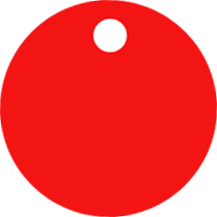
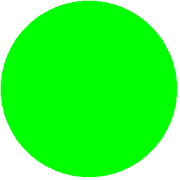

Connection status:
acquiring connection 

Functions
Mark desired services with alt-click
Rescan /peek
Crash VM
Kill running trees
Take snapshot
Filters
Mark desired services with alt-click
Color __func__ purple
Highlight memleaks
Highlight dangling pointers
Diff services
File inspection
Cat
Hexdump